Ebb — mobile design Free, open-source, ADHD-friendly Android day planner (working name). Every screen, sheet, dialog and overlay from spec §9.2, in light and dark at 412×915 dp (rendered 2×). Key screens also in dynamic colour and high contrast; 200% font, RTL (Arabic) and small-phone (360×640) variants for the screens §9.1 names.
66 of 66 checklist items · 436 PNGs
Onboarding (9) Main (6) Task & capture (11) Day operations (8) Focus (4) Routines (3) Feedback & progress (2) Settings (15) System dialogs & special (7) Widget configuration (1) Onboarding 9 of 9 in brief O1 · Welcome Screen · MVP O2 · Our promise Screen · MVP O3 · Your day shape Screen · MVP O4 · A few preferences Screen · MVP O8 · Try it: dump & drag Screen · MVP O5 · Notifications primer Screen · MVP O6 · Exact alarms primer Screen · MVP O7 · Calendar primer Screen · MVP O9 · You’re set Screen · MVP Main 6 of 6 in brief M1 · Today Screen · MVP Populated (now 10:42, current block draining) · light 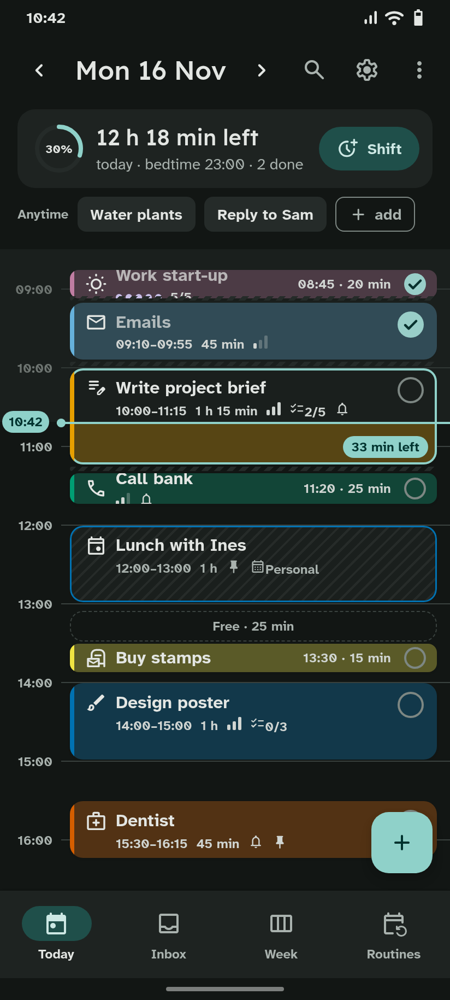
Populated (now 10:42, current block draining) · dark 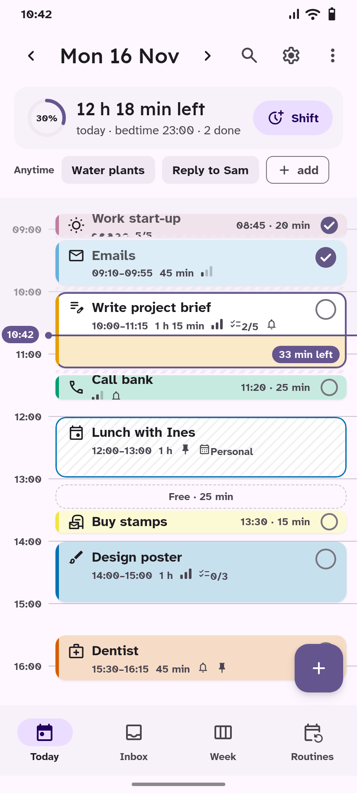
Populated (now 10:42, current block draining) · dynamic colour · light 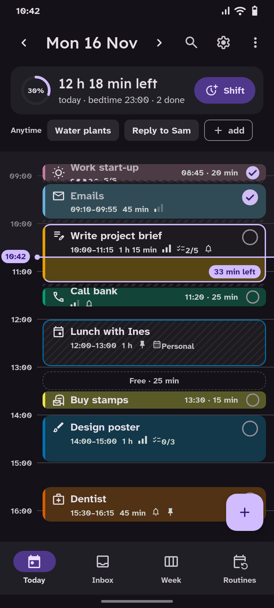
Populated (now 10:42, current block draining) · dynamic colour · dark 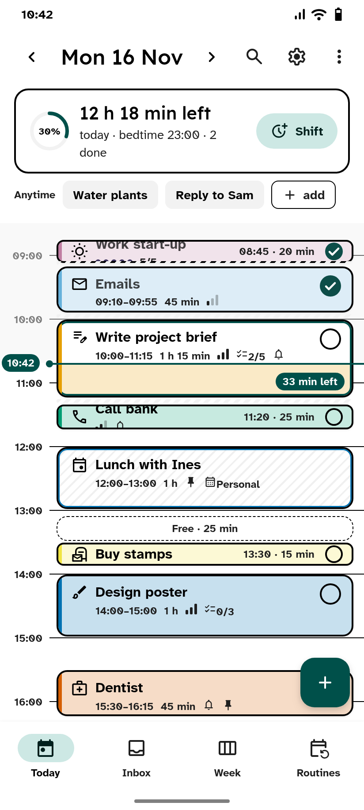
Populated (now 10:42, current block draining) · high contrast · light 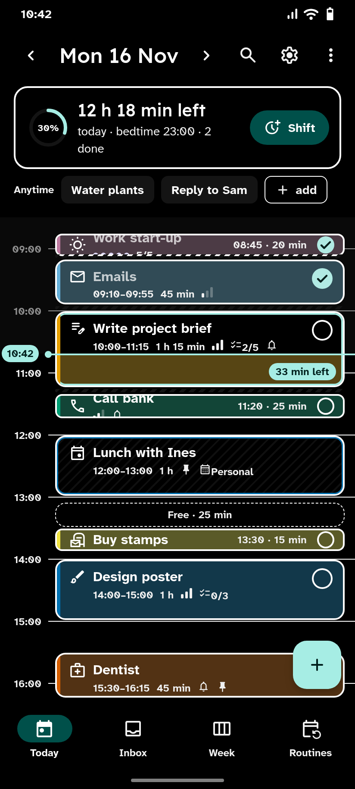
Populated (now 10:42, current block draining) · high contrast · dark 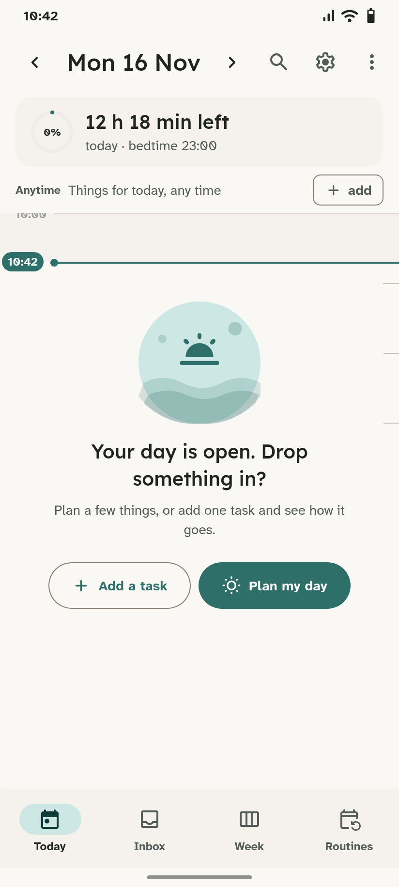
Empty day · light 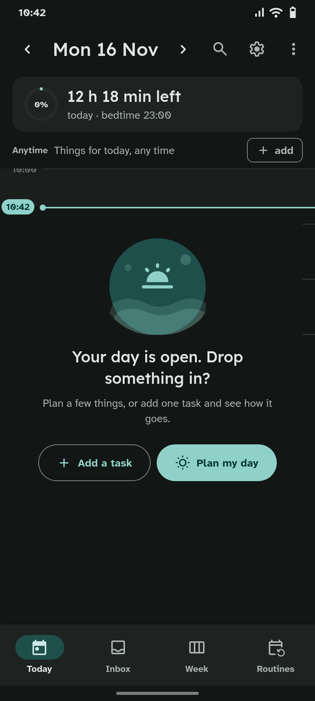
Empty day · dark 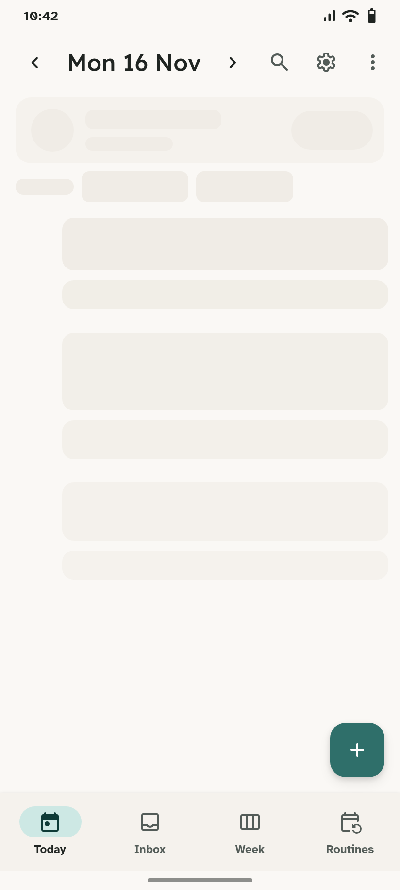
Loading skeleton · light 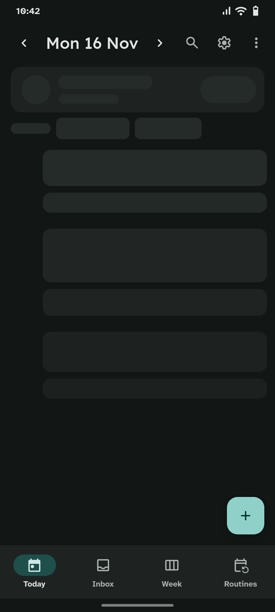
Loading skeleton · dark 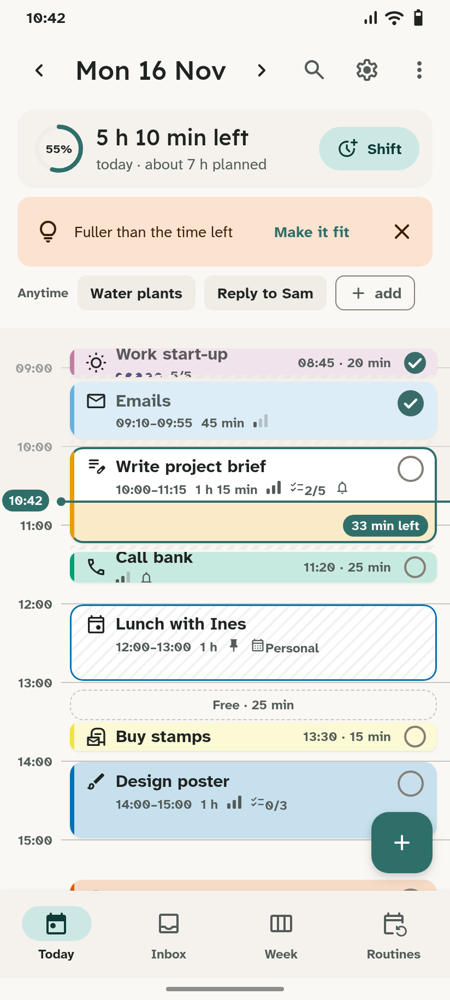
Overfull banner · light 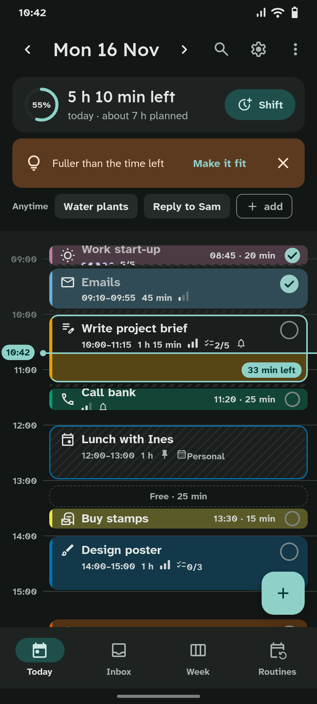
Overfull banner · dark 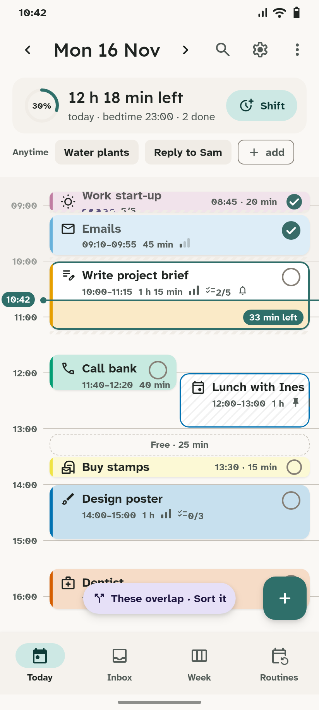
Overlap hint chip · light 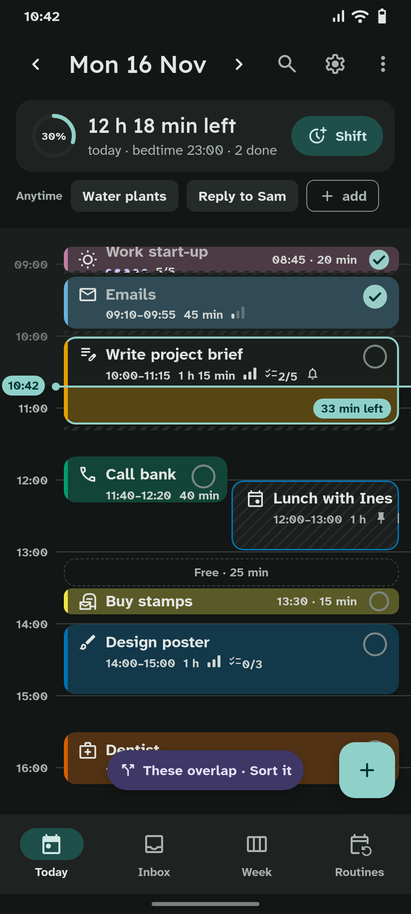
Overlap hint chip · dark 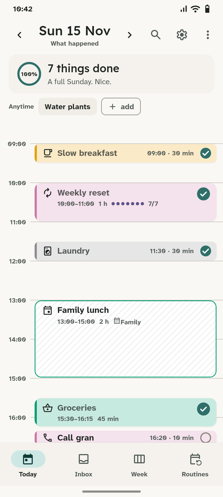
Past day (read-mostly) · light 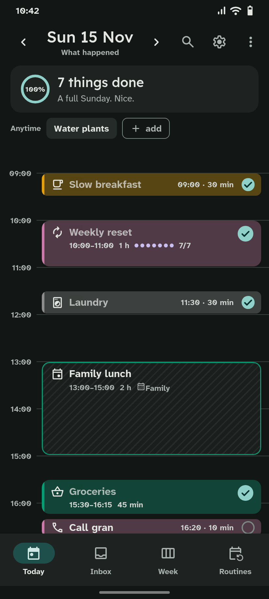
Past day (read-mostly) · dark 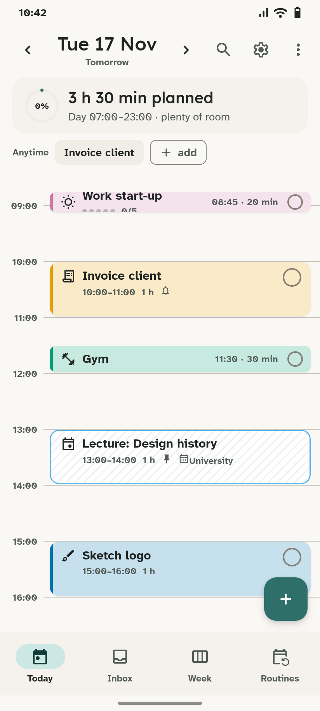
Future day · light 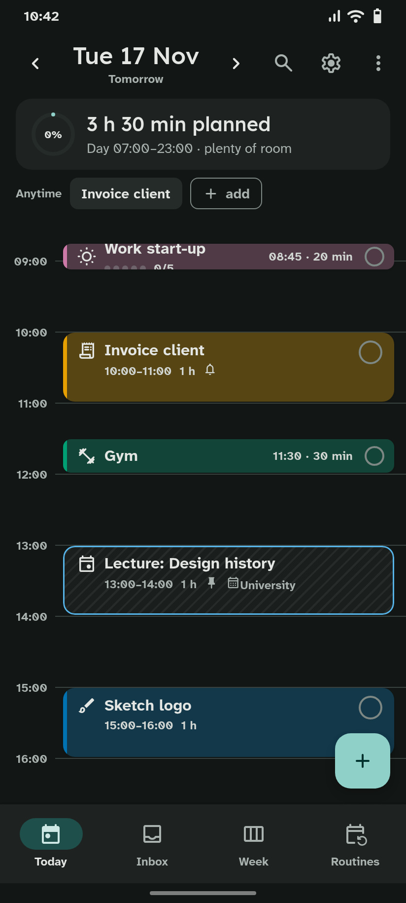
Future day · dark 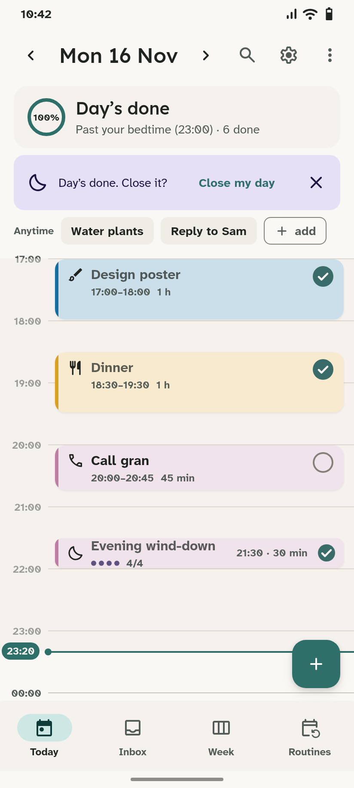
After bedtime banner · light After bedtime banner · dark Reminders unhealthy banner · light Reminders unhealthy banner · dark Drag in progress (ghost + snap tooltip) · light Drag in progress (ghost + snap tooltip) · dark Multi-select mode · light Multi-select mode · dark Very dense day (22 blocks, compact zoom) · light Very dense day (22 blocks, compact zoom) · dark 200% font scale (rail shows “9”, blocks title only) · light 200% font scale (rail shows “9”, blocks title only) · dark RTL (Arabic) mirror · light RTL (Arabic) mirror · dark Small phone 360×640 · light Small phone 360×640 · dark M2 · Inbox Screen · MVP Populated · light Populated · dark Populated · dynamic colour · light Populated · dynamic colour · dark Populated · high contrast · light Populated · high contrast · dark Empty · light Empty · dark Filtered — nothing matches · light Filtered — nothing matches · dark Swipe right → Today · light Swipe right → Today · dark Swipe left → Later… menu · light Swipe left → Later… menu · dark Multi-select + action bar · light Multi-select + action bar · dark Monthly “Tidy up?” card · light Monthly “Tidy up?” card · dark Loading skeleton · light Loading skeleton · dark 500+ items (virtualised, Someday collapsed) · light 500+ items (virtualised, Someday collapsed) · dark RTL (Arabic) mirror · light RTL (Arabic) mirror · dark Small phone 360×640 · light Small phone 360×640 · dark M3 · Week Screen · MVP (drag v1.x) Portrait list (today highlighted, past muted) · light Portrait list (today highlighted, past muted) · dark Empty week · light Empty week · dark Landscape / tablet columns · light Landscape / tablet columns · dark Drag between days (v1.x) · light Drag between days (v1.x) · dark M4 · Routines Screen · MVP Populated · light Populated · dark Empty · light Empty · dark Routine currently running · light Routine currently running · dark M5 · Search Screen · MVP Initial — recent searches · light Initial — recent searches · dark Results with highlighted match · light Results with highlighted match · dark No results → add as task · light No results → add as task · dark M6 · Done history Screen · v1.x Populated · light Populated · dark Empty · light Empty · dark Task & capture 11 of 11 in brief T1 · Quick capture Sheet (+ transparent activity) · MVP In-app sheet, empty (keyboard open) · light In-app sheet, empty (keyboard open) · dark In-app sheet, empty (keyboard open) · dynamic colour · light In-app sheet, empty (keyboard open) · dynamic colour · dark In-app sheet, empty (keyboard open) · high contrast · light In-app sheet, empty (keyboard open) · high contrast · dark Typing · light Typing · dark Multi-line paste prompt · light Multi-line paste prompt · dark Saved — “3 added” counter, sheet stays open · light Saved — “3 added” counter, sheet stays open · dark Draft restored · light Draft restored · dark Over home screen (widget / tile / shortcut) · light Over home screen (widget / tile / shortcut) · dark Natural-language highlight (v1.x) · light Natural-language highlight (v1.x) · dark Keyboard + 200% font · light Keyboard + 200% font · dark RTL (Arabic) mirror · light RTL (Arabic) mirror · dark Small phone 360×640 · light Small phone 360×640 · dark T2 · Task detail Full-screen sheet · MVP Existing task · light Existing task · dark Existing task · dynamic colour · light Existing task · dynamic colour · dark Existing task · high contrast · light Existing task · high contrast · dark New task · light New task · dark Recurring instance · light Recurring instance · dark Done state · light Done state · dark 20+ subtasks + long title · light 20+ subtasks + long title · dark 200% font · light 200% font · dark RTL (Arabic) mirror · light RTL (Arabic) mirror · dark Small phone 360×640 · light Small phone 360×640 · dark T3 · Estimate picker Sheet · MVP T4 · Color & icon Sheet · MVP Selected (with names + a11y patterns) · light Selected (with names + a11y patterns) · dark Icon search — no results · light Icon search — no results · dark T5 · Reminder picker Sheet · MVP Default · light Default · dark Permissions missing row · light Permissions missing row · dark Alarm-style unavailable · light Alarm-style unavailable · dark T6 · Repeat editor Full screen · MVP Presets · light Presets · dark Custom (live summary, invalid combos disabled) · light Custom (live summary, invalid combos disabled) · dark After-completion mode · light After-completion mode · dark T7 · Break it down Sheet · MVP 0 steps · light 0 steps · dark Many steps · light Many steps · dark T8 · Schedule picker Sheet · MVP Default (with landing preview) · light Default (with landing preview) · dark “Today’s full” · light “Today’s full” · dark T9 · Voice capture Overlay · MVP Listening · light Listening · dark Processing · light Processing · dark No match · light No match · dark Unavailable · light Unavailable · dark T10 · Share receive Sheet (over source app) · MVP Text / link · light Text / link · dark Multiple items · light Multiple items · dark T11 · Brain dump Screen · MVP Empty (rotating prompt) · light Empty (rotating prompt) · dark Draft — 6 thoughts · light Draft — 6 thoughts · dark Duplicates prompt · light Duplicates prompt · dark Success · light Success · dark Day operations 8 of 8 in brief D1 · Shift the rest of my day Sheet · MVP Default — everything fits (+15) · light Default — everything fits (+15) · dark Some won’t fit today · light Some won’t fit today · dark Pinned conflict · light Pinned conflict · dark Nothing to shift · light Nothing to shift · dark Applied + snackbar (Undo) · light Applied + snackbar (Undo) · dark 200% font · light 200% font · dark RTL (Arabic) mirror · light RTL (Arabic) mirror · dark Small phone 360×640 · light Small phone 360×640 · dark D2 · Overlap helper Sheet · MVP Two tasks overlap · light Two tasks overlap · dark With a calendar event (event can’t move) · light With a calendar event (event can’t move) · dark D3 · Make it fit Sheet · MVP Suggestions · light Suggestions · dark Nothing to suggest · light Nothing to suggest · dark D4 · Plan my day Screen (3-step) · MVP Step 1 — what matters today · light Step 1 — what matters today · dark Too much selected · light Too much selected · dark Nothing in Inbox → brain dump · light Nothing in Inbox → brain dump · dark Step 2 — split view (timeline + tray) · light Step 2 — split view (timeline + tray) · dark Auto-place result · light Auto-place result · dark Step 3 — summary · light Step 3 — summary · dark D5 · End-of-day review Screen (3–4 steps) · MVP Step 1 — celebration · light Step 1 — celebration · dark Step 1 — celebration · dynamic colour · light Step 1 — celebration · dynamic colour · dark Step 1 — celebration · high contrast · light Step 1 — celebration · high contrast · dark Step 2 — re-home open items · light Step 2 — re-home open items · dark Step 3 — reflection (v1.x) · light Step 3 — reflection (v1.x) · dark Step 4 — rest well + tomorrow preview · light Step 4 — rest well + tomorrow preview · dark Nothing-done variant · light Nothing-done variant · dark Small phone 360×640 · light Small phone 360×640 · dark D6 · Welcome back Screen · MVP Default · light Default · dark Review list (grouped by item) · light Review list (grouped by item) · dark D7 · Calendar event detail Sheet · MVP Recurring event with details · light Recurring event with details · dark All-day, no details · light All-day, no details · dark D8 · Jump to date Dialog · MVP Month grid with load dots · light Month grid with load dots · dark Focus 4 of 4 in brief F1 · Focus Full screen · MVP Idle / setup · light Idle / setup · dark Running — ring · light Running — ring · dark Running — ring · dynamic colour · light Running — ring · dynamic colour · dark Running — ring · high contrast · light Running — ring · high contrast · dark Running — bar · light Running — bar · dark Hide-numbers mode · light Hide-numbers mode · dark Paused · light Paused · dark Interval (2 of 4) · light Interval (2 of 4) · dark “Just 5 minutes” mode + keep going? · light “Just 5 minutes” mode + keep going? · dark Landscape · light Landscape · dark 200% font · light 200% font · dark Small phone 360×640 · light Small phone 360×640 · dark F2 · Time’s up check-in Dialog / overlay · MVP In app · light In app · dark From notification (lock screen) · light From notification (lock screen) · dark F3 · Hyperfocus check-in Full-screen overlay / heads-up · MVP Gentle (heads-up card) · light Gentle (heads-up card) · dark Strong (full-screen) · light Strong (full-screen) · dark F4 · Break Screen · MVP Break countdown · light Break countdown · dark Break ended prompt · light Break ended prompt · dark Routines 3 of 3 in brief R1 · Routine editor Screen · MVP Editing (from Work start-up template) · light Editing (from Work start-up template) · dark New, 0 steps (save disabled + hint) · light New, 0 steps (save disabled + hint) · dark Very long routine (30 steps) · light Very long routine (30 steps) · dark R2 · Routine run Full screen · MVP First step · light First step · dark Mid step + running-behind chip · light Mid step + running-behind chip · dark Last step · light Last step · dark Resumed after interruption · light Resumed after interruption · dark Finished celebration · light Finished celebration · dark R3 · Templates gallery Screen · MVP Gallery · light Gallery · dark Template preview sheet · light Template preview sheet · dark Feedback & progress 2 of 2 in brief G1 · Garden & wins Screen · v1.x Mature garden · light Mature garden · dark Empty · light Empty · dark G2 · Celebration overlay Overlay · MVP Small · calm · light Small · calm · dark Small · lively · light Small · lively · dark Medium · calm · light Medium · calm · dark Medium · lively · light Medium · lively · dark Large · calm (soft particles) · light Large · calm (soft particles) · dark Large · lively (confetti ≤1.5 s) · light Large · lively (confetti ≤1.5 s) · dark Reduced-motion static · light Reduced-motion static · dark Settings 15 of 15 in brief S1 · Settings hub Screen · MVP Health pill — good · light Health pill — good · dark Health pill — warn · light Health pill — warn · dark S2 · Day & time Screen · MVP Default · light Default · dark S3 · Reminders & notifications Screen · MVP Default · light Default · dark S4 · Reminder health check Screen · MVP All good · light All good · dark Problems · light Problems · dark Test sent · light Test sent · dark S5 · Appearance Screen · MVP With live preview · light With live preview · dark S6 · Accessibility Screen · MVP Default · light Default · dark S7 · Calendars Screen · MVP Permission off · light Permission off · dark Calendar list · light Calendar list · dark S8 · Focus & timer Screen · MVP Default · light Default · dark S9 · Celebrations, sounds & haptics Screen · MVP Default · light Default · dark S10 · Backup & export Screen · MVP No folder · light No folder · dark Folder set · light Folder set · dark Last backup failed · light Last backup failed · dark S11 · Sync Screen · v1.x Folder sync set up (v1.x) · light Folder sync set up (v1.x) · dark S12 · Import Screen · v1.x Source picker · light Source picker · dark Field-mapping preview · light Field-mapping preview · dark Result summary · light Result summary · dark S13 · Widgets help Screen · MVP Gallery + tips · light Gallery + tips · dark S14 · About & open source Screen · MVP Default · light Default · dark S15 · Privacy Screen · MVP Default · light Default · dark System dialogs & special 7 of 7 in brief X1 · Task actions sheet Sheet · MVP Single task · light Single task · dark Recurring task · light Recurring task · dark Calendar event (limited) · light Calendar event (limited) · dark X2 · Permission rationale / denied Dialog · MVP Notifications — first ask · light Notifications — first ask · dark Exact alarms · light Exact alarms · dark Calendar · light Calendar · dark Full-screen alerts · light Full-screen alerts · dark Permanently denied · light Permanently denied · dark X3 · Restore confirm Dialog · MVP Summary + Replace / Merge · light Summary + Replace / Merge · dark Newer schema error · light Newer schema error · dark Corrupt file · light Corrupt file · dark X4 · Sync conflict Dialog / screen · v1.x Side by side (1 of 2 in queue) · light Side by side (1 of 2 in queue) · dark X5 · Recurring edit scope Dialog · MVP Edit · light Edit · dark Delete variant · light Delete variant · dark X6 · Full-screen alarm Activity over lock screen · MVP Locked, ringing · light Locked, ringing · dark Unlocked, ringing · light Unlocked, ringing · dark Snoozed · light Snoozed · dark X7 · Let go / delete confirm Dialog · MVP Bulk · light Bulk · dark Series · light Series · dark Delete all data (type DELETE) · light Delete all data (type DELETE) · dark WC · Widget configuration Screen · MVP With live preview (Now & Next) · light With live preview (Now & Next) · dark W7 routine picker (v1.x) · light W7 routine picker (v1.x) · dark